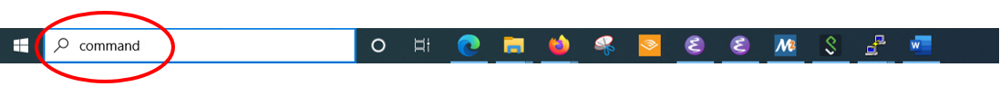
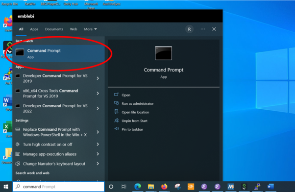

|
InstallationSave the downloaded filespdbsum1.tar.gz, data.tar.gz, docs.tar.gz, exe_linux.tar.gz, exe_mac.tar.gz, exe_win.tar.gzto the same directory, wherever appropriate. On Windows, for example, this might be C:\PDBsum1. Then unpack as follows: a. Linux and macUnzip the files in that directory as follows:gunzip *.tar.gzThis will create a directory called pdbsum1, and various subdirectories beneath, containing all the necessary files. b. WindowsRight-click on each file's icon and select Extract All. When prompted, choose to extract to C:\PDBsum1, or wherever else you would like to store the programs. A directory called pdbsum1 will be created containing all the necessary files.Check the executablesIt is a good idea to check whether the installed executables are compatible with your operating system. If not, you can recompile the programs from the supplied source code, as described shortly.a. Linux and macTo perform the check on linux or mac, open a terminal window and go to the appropriate executables directory:
./pdbsum1If all is OK, you will see the following message: Usage is:
pdbsum1 {file [pdb_code] | -l dataset.lst} [-nomaxchn] [-help]
where
* file = Name of single PDB file to be processed
* pdb_code = Optional 4-character identifier
* -l dataset.lst = Name of file listing PDB files to be processed
* -nomaxchn = Clefts to be generated even if more than 4 chains in structure
* -relinks = Make all image links relative
If not, you will see something line:
./pdbsum1: Exec format error. Binary file not executable.or '.\pdbsum1' is not recognized as an internal or external command, operable program or batch file. In which case, you will need to recompile the programs as described below. b. WindowsFor Windows, you need to open a "Command Prompt" window. This is the window you will use to run PDBsum1. To open it, enter "command" into the Windows search box at the bottom left of the screen: Then, click on the "Command Prompt" app:  And you will get the Command Prompt window:  You can now enter the required commands into this window. To check whether the installed executables are compatible with your operating system go to the exe_win directory. If you installed the programs in C:\, the commands will be: C:If you installed the program elsewhere, then the path in the second command will need to be changed accordingly. For example, if you uzipped the programs into C:\Users\yourname, the second command becomes: cd C:\Users\yourname\pdbsum1\exe_winThen type:: .\pdbsum1If all is OK, you will see the following message: Usage is:
pdbsum1 {file [pdb_code] | -l dataset.lst} [-nomaxchn] [-help]
where
* file = Name of single PDB file to be processed
* pdb_code = Optional 4-character identifier
* -l dataset.lst = Name of file listing PDB files to be processed
* -nomaxchn = Clefts to be generated even if more than 4 chains in structure
If not, you will see something line:
./pdbsum1: Exec format error. Binary file not executable.or '.\pdbsum1' is not recognized as an internal or external command, operable program or batch file. In which case, you will need to recompile the programs as described in the next section. Recompiling the programsIf your check in the previous section gives you an error, you can recompile the programs from this same directory by typing:source ../scripts/compile.linux - for linuxor source ../scripts/compile.mac - for macFor Windows, you will need to have a linux-like environment such as cygwin or Msys2 installed with a C and gfortran compiler, or make use of the Visual Studio build tools. The equivalent command from the exe_win directory will then be: source ../scripts/compile.winContact roman@ebi.ac.uk if you have any problems, stating the version of the operating system that you have. Download required external packagesPDBsum1 requires a number of 3rd-party packages to run. These are listed below and must be installed or the programs will not be able to run properly. If your system does not already have them, a Google search will help you to find where to obtain them. On mac, you can use Homebrew (https://brew.sh) to install them all.
Download required data fileThe PDBsum1 program LIGPLOT requires the Het Group Dictionary. This defines the atom names, connectivities and bond orders of every Het Group in the PDB. You can download a copy of this dictionary from the wwPDB at:https://files.wwpdb.org/pub/pdb/data/monomers/components.cifSave the file in the directory pdbsum1/data. A dummy file (containing a single molecule) is provided with the distribution, so just overwrite that. It is a good idea to download it regularly to always have an up-to-date copy. Download optional packagesThe following packages are recommended for download.
Editing the parameter fileBefore you can run PDBsum1, you need to tell the program where certain things are located so that it can find them. This is done by editing a simple text file called CATHPARAM, located in the directory:pdbsum1/paramsOnly six parameters need to be edited, as shown in green below:
The parameters you need to define are:
Script for RasMolMany of the PDBsum1 analyses can be viewed in 3D using the RasMol molecular viewer. These include the structure as a whole, protein-ligand interasctions, and individual ProMotif motifs.PDBsum1 generates RasMol scripts to display these correctly. However, to view them needs a little set-up. There are two scripts in the pdbsum1/scripts directory to help you. Both are called rasscriptstart. The one with the .scr extension is for use on linux or mac, while the .bat one is for Windows machines. They are:
Once you have installed all the required programs, and edited the CATHPARAM file as described above, you are ready to start running PDBsum1. Instructions can be found in: PDBsum1 Manual
|